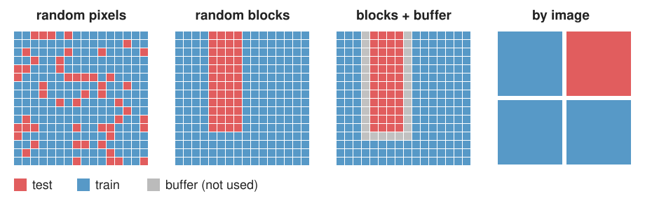

Honest validation: leakage, splits and domain shift
Image analysis
About this lecture
A test score is only as good as the test. Today: how a validation can lie, and how to design one that does not.
The rule: the test set must be as new as the data you will work on later.
Why random pixel or patch splits leak: neighbouring pixels are near copies.
The hierarchy of splits: pixel, patch, image, specimen, experiment, day, site.
Other leaks: augmenting or normalising before the split, duplicates, tuning on the test set.
Domain shift: what a held-out day or site measures.
Slides titled The math give the formulas and proofs; the ideas are complete without them.
Recall: training and test sets
From the random-forest day: train on one set, measure on another; cross-validation rotates the test part through the data (k folds).
That day already met a trap: pixels of one stroke are near copies of each other, so a classifier “tested” on pixels next to its training pixels scores far too well (“out-of-bag 99 %, held-out region 85 %”).
Today turns this into a rule and climbs above the single image.
The rule
The test set must be as new as the data you want to work on later.
If the method will be used on new images, from new experiments, on other days, then the test images must come from experiments and days it has never seen, not only from images it has not seen.
Every shortcut in the split is leakage: information about the test set reaches the training, and the score is optimistic. Leakage is not cheating on purpose; it is the default when data are split carelessly.
Why random pixel splits leak
Images are spatially autocorrelated: a pixel looks almost like its neighbours and has almost always the same label.

Random pixels: every test pixel has training pixels right next to it, with nearly the same features and the same label. The classifier only needs to remember, not to generalise.
Random blocks: only the pixels at block edges have close neighbours in training. Blocks with a buffer zone remove even those.
By image: no test pixel has a neighbour in training.
The same holds for patches cut from one image, frames of one movie, slices of one volume, cells of one well.
The math: correlated samples count less
The autocorrelation of an image, C(\delta) = \text{corr}\big(I(\mathbf x), I(\mathbf x + \delta)\big), falls from 1 at \delta = 0 to about 0 beyond a correlation length\ell (the size of the structures, or of the smoothing in the features). Samples closer than \ell carry almost the same information.
n samples in clusters of m, with correlation \rho inside a cluster and 0 between clusters: the variance of their mean is that of
n_{\text{eff}} = \frac{n}{1 + (m - 1)\rho}
independent samples (the design effect; derived in the replicates unit). For \rho \to 1, n_{\text{eff}} \to n/m: one sample per cluster.
For a test score: if test pixels sit within \ell of training pixels, the test is not a new sample at all; the error rate measures memory, not generalisation.
The hierarchy of splits
Data come in nested levels; each level shares something the level below does not:
pixel < patch < image < specimen / well < experiment / day < site / microscope / lab
Split at the level you claim to generalise to: all data of one unit go to the same side. “Leave one experiment out” is k-fold cross-validation over experiments (group k-fold).
The test score then answers: how well does it work on a new experiment?
Only one big image (one slide, one scan)? Split it into spatial blocks with a buffer between training and test blocks wider than the correlation length.
Try it: five ways to split
Other leaks
Augment, then split: rotated or flipped copies of a test image end up in training. The classifier has seen the test image. Augment the training set after the split.
Normalise with statistics of the whole data set before splitting: the test set’s mean and SD shape the training data (usually mild, but avoid it).
Duplicates and near-duplicates: the same field imaged twice, overlapping tiles, the same patient under two names.
Selecting features on all data, then cross-validating the classifier: the selection has already looked at the test labels.
Shortcuts inside the data: a scale bar, a plate edge, a scanner mark that correlates with the label. Not a split error, but the same effect: the score measures something other than what you want.
Tuning on the test set
You try 50 settings (feature scales, a threshold, the network size, post-processing) and report the best test score. That reports luck.
A test score from n objects wobbles by about \sqrt{a(1-a)/n}: 0.04 for accuracy 0.8 and n = 100.
The maximum of many noisy scores lies above the true value, even if all settings are equally good: with 20 equal settings by about 1.9 SE, with 50 by about 2.2 SE.
50 settings, all with true accuracy 0.80, test set of 100 objects: the best reads 0.89 on average; on fresh data it scores 0.80.
Choosing the best-looking result after the fact is a leak from the test set into the method.
The math: the optimism of the best of k
k settings with the same true accuracy a; test scores \hat a_j = a + \varepsilon_j, \varepsilon_j \sim N(0, \sigma^2) independent, \sigma = \sqrt{a(1-a)/n}.
The optimism grows only like \sqrt{\ln k}, but it never stops growing, and it shrinks only like 1/\sqrt n.
Try it: peeking at the test set
Training, validation, test
Training set: fit the model.
Validation set (or cross-validation inside the training data): make every choice: settings, features, when to stop, which model.
Test set: touch it once, at the end, for the number you report.
If you need the test set again after looking at it, it has become a validation set; a new test set is needed for an honest number. With little data, nested cross-validation: an inner loop chooses, an outer loop tests the whole procedure.
The math: nested cross-validation
What we want to estimate is the error of the procedure “tune, then train”, applied to new data, not the error of one fitted model.
Outer loop over folds F_1, \dots, F_K: hold out F_k.
Inner loop on the rest: cross-validate every candidate setting; pick the best \theta_k^*; retrain on all of the rest with \theta_k^*.
Test that model on F_k. Average over k.
Every outer test fold is untouched by the choice of \theta_k^*, so the average is unbiased for the procedure (up to the smaller training sets). The inner CV score of \theta_k^* is the optimistic “best of k” from the previous math slide; the outer score is not.
Domain shift
A new microscope, a new stain batch, a new cell line, another lab: the input distribution changes (the neural-networks day calls this domain shift).
A test on held-out images of the same experiments measures interpolation. A test on a held-out day or site measures generalisation to new conditions.
The drop from “held-out image” to “held-out day” is the domain shift, and it is the number a user of the method cares about.
In the demo: by image 92.2 %, by day 86.8 %; with a strong day effect, by day 80.5 %, no better than always answering “background” (81.5 %).
Report the split level next to every score.
A checklist for a validation
What is the unit of the split (pixel, image, experiment, day, site), and is it the level of the claim?
Was anything done before the split (augmentation, normalisation, feature selection)?
What was tuned on what? Was the test set used once?
Are there duplicates or near-duplicates across the split?
What is the test domain: same microscope and protocol, or new ones?
Could a shortcut in the data explain the score?
Summary
The test set must be as new as the data you will use the method on. Otherwise information leaks and the score is optimistic.
Neighbouring pixels, patches, frames and cells are near copies: random pixel splits leak. Split by image, experiment or day; for one big image use blocks with a buffer.
Augment and normalise after the split; beware duplicates and feature selection on all data.
Tuning on the test set reports luck: the best of k noisy scores is optimistic by about \sigma\sqrt{2\ln k} at most. Use a validation set or nested cross-validation; touch the test set once.
A held-out day or site measures domain shift, the number users care about.